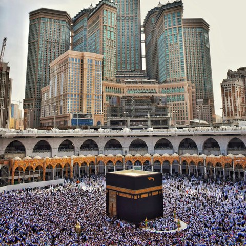

Read the complete Quran, listen to beautiful recitations, and find accurate prayer times and Qibla direction anywhere in the world — free, always, as a sadaqah-e-jariah.
All 114 surahs in Arabic with Urdu and English translation.
Beautiful Quran recitations by renowned Qaris, ayah-by-ayah or continuous.
Accurate namaz timings for any city in the world.
Find the direction of the Kaaba from wherever you are.
Asma‑ul‑Husna with Urdu and English meaning.
Masnoon duas for everyday moments, with translation.